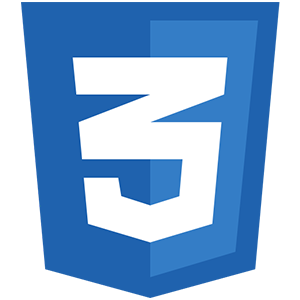
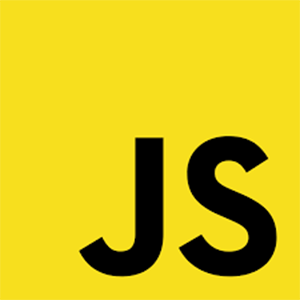
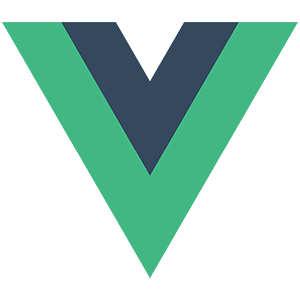
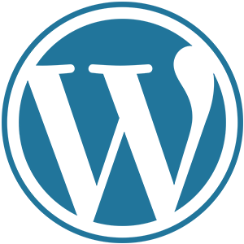
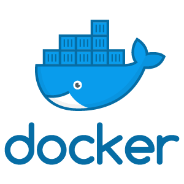
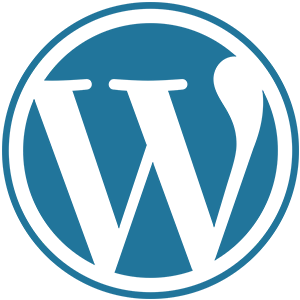
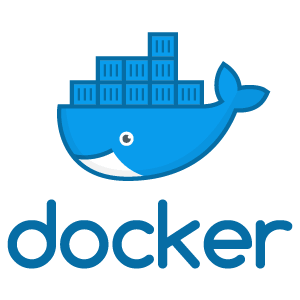
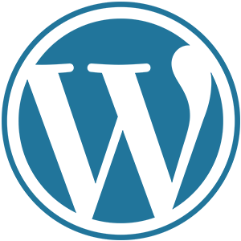
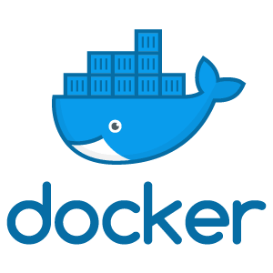

Nome
Gleydson José da Silva - 22 Anos
Profissão
Desenvolvedor Web Fullstack
Sobre mim
Entrei nesse mundo da programação no 4° trimestre de 2017, mas não como desenvolvedor web e sim de software, iniciei em Java e fiquei por um tempo estudando ele e um pouco da parte web, mas com mais algum tempo de estudos eu acabei desistindo do Java porque eu vi uma opção melhor que eu acabei gostando mais, o "Python", fiz alguns projetos com ele mas só postei 1 no repositório do meu github, desenvolvimento de software é uma área que ainda continuo gostando, mas acabei mudando para desenvolvimento web em 2019, eu já estudava coisas dessa área antes, mas não com tanta frequência igual a este ano, e isso ocasionou alguns projetos que estão neste portfólio. Desenvolvimento web é realmente a área que estou focando mais em meus estudos, eu pretendo continuar aprendendo mais e mais como sempre fiz desde o inicio, e sobre qual lado eu estou nessa área, eu acabei escolhendo os dois(Fullstack), apesar de gostar mais do Back-end.
Venho utilizando atualmente



 





Meus projetos web
{{ project.projectName }}
{{ project.projectDescription }}